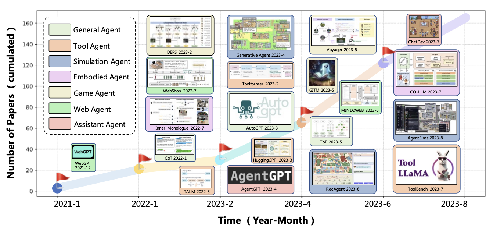

class: center, middle # Getting Started with AutoGen ### By Lucas Soares --- <div class="slide"> <h1>Lucas Soares</h1> <div style="display: flex; align-items: center;"> <ul style="flex: 1;"> <li>ML Engineer</li> <br> <br> <br> <br> </ul> <img src="../notebooks/assets-resources/profile_pic.png" width="300" style="margin-left: 20px;"> </div> </div> --- <div class="slide"> <h1>Lucas Soares</h1> <div style="display: flex; align-items: center;"> <ul style="flex: 1;"> <li>ML Engineer</li> <br> <li>Instructor at O'Reilly Media</li> <br> <br> </ul> <img src="../notebooks/assets-resources/profile_pic.png" width="300" style="margin-left: 20px;"> </div> </div> --- <div class="slide"> <h1>Lucas Soares</h1> <div style="display: flex; align-items: center;"> <ul style="flex: 1;"> <li>ML Engineer</li> <br> <li>Instructor at O'Reilly Media</li> <br> <li>Curious about all things intelligence</li> </ul> <img src="../notebooks/assets-resources/profile_pic.png" width="300" style="margin-left: 20px;"> </div> </div> --- # Table of Contents __1. Agents as Thought + Action__ -- __2. Defining Agents__ -- __3. Agents in 3 Levels of Complexity__ -- __4. OpenAI's Function API__ -- __5. AutoGen Framework__ -- __6. Design Patterns in AutoGen__ -- __7. Building Agents with AutoGen__ -- __8. Concluding Remarks__ -- __9. References__ --- # Thought + Action -- - How do we do stuff? --- # Thought + Action - How do we do stuff? We __think__ and we __act__ -- - Example: Decision-making process for attending a live-training -- - __Thought__: "I want to learn about agents" -- - __Action__: "Go to the internet and research cool platforms where I can learn about agents" -- - __Thought__: "O'Reilly has some awesome courses and live-trainings" -- - __Action__: "Look up O'Reilly courses" -- - __Thought__: "Live-trainings by instructor Lucas are awesome" -- - __Action__: "Schedule live-training about agents with instructor Lucas Soares" --- class: center, middle # Thinking: ## What to do + planning (order, priority..) --- class: center, middle # Acting: ## used __tools: search, browser, etc...__ --- # What is an Agent? -- ## LLM --- # What is an Agent? ## LLM + Tools -- <div style="display: flex; align-items: center;"> <h4>LLM</h4><p> = predicts next word/sentence</p> <img src="../notebooks/assets-resources/llm_predicts_pancakes.png" width="300" style="margin-left:100px"> </div> -- <div style="display: flex; align-items: center;"> <h4>Tool</h4><p> = perform actions in the real-world</p> </div> --- ## Agents Are Getting Popular -- - [A Survey on Large Language Model based Autonomous Agents](https://arxiv.org/pdf/2308.11432.pdf)  --- # ['Toolformer'](https://arxiv.org/pdf/2302.04761.pdf) -- <li>LLMs can teach themselves how to <br> properly call external tools. </li> --- # [ReACT](https://arxiv.org/pdf/2210.03629.pdf) - LLMs for __RE__asoning & __ACT__ion. --- # Popular Agent Implementations -- - [BabyAGI](https://github.com/yoheinakajima/babyagi): separate planning and execution steps -- - [AutoGPT](https://github.com/Significant-Gravitas/AutoGPT): created for long-running, open-ended goals -- - [GPT-Researcher](https://github.com/assafelovic/gpt-researcher?ref=blog.langchain.dev): produce detailed, factual and unbiased research reports -- - [OpenGPTs](https://github.com/langchain-ai/opengpts?ref=blog.langchain.dev): Open Source Customizable Agents --- class: center, middle # Agents in 3 Levels of Complexity --- # Level 1: LLM + functions inside the prompt -- - Inspired by ['Toolformer'](https://arxiv.org/pdf/2302.04761.pdf) </img> --- # Level 1: LLM + functions inside the prompt ```python from openai import OpenAI client = OpenAI() def get_response(prompt_question, model="gpt-3.5-turbo-16k"): response = client.chat.completions.create( model=model, messages=[{"role": "system", "content": "You are a helpful research and programming assistant"}, {"role": "user", "content": prompt_question}] ) return response.choices[0].message.content def create_directory(directory_name): subprocess.run(["mkdir", directory_name]) def create_file(file_name): subprocess.run(["touch", file_name]) def list_files(): subprocess.run(["ls"]) ``` --- # Level 1: LLM + functions inside the prompt ```python task_description = "Create a folder called 'lucas-the-agent-master'. Inside that folder, create a file called 'the-10-master-rules.md" output = get_response(f"""Given this task: {task_description}, \n Consider you have access to the following functions: def create_directory(directory_name): '''Function that creates a directory given a directory name.''' subprocess.run(["mkdir", directory_name]) def create_file(file_name): '''Function that creates a file given a file name.''' subprocess.run(["touch", file_name]) def list_files(): '''Function that lists all files in the current directory.''' subprocess.run(["ls"]) Your output should be the first function to be executed to complete the task containing the necessary arguments. The OUTPUT SHOULD ONLY BE THE PYTHON FUNCTION CALL and NOTHING ELSE. """) Markdown(output) # Output: # create_directory('lucas-the-agent-master') ``` --- # Level 1: LLM + functions inside the prompt - Now, all we need is to find a way to execute this function. -- - We can use Python's built in `exec` method for that: -- ```python exec("model." + output) !ls -d */ | grep lucas # Output: # lucas-the-agent-master/ ``` --- # Limitations -- - __Probabilistic outputs__ make function calls unreliable -- - Need for __structured ways to prepare the inputs__ of the function calls -- - Putting entire functions inside text prompts is clunky and __non-scalable__ -- - Solution? __OpenAI Functions__! --- class: center, middle # OpenAI's Function Calling API --- # OpenAI Function Calling -- - [OpenAI function calling](https://platform.openai.com/docs/guides/function-calling): --- # OpenAI Function Calling - [OpenAI function calling](https://platform.openai.com/docs/guides/function-calling): standard way to connect models to outside tools. -- ### Steps -- 1. Call the model with the user query and a set of functions defined in the functions parameter. -- 2. The model can choose to call one or more functions; if so, the content will be a stringified JSON object adhering to your custom schema. -- 3. Parse the string into JSON in your code, and call your function with the provided arguments if they exist. -- 4. Call the model again by appending the function response as a new message, and let the model summarize the results back to the user. --- # Step 1 & 2 -- ```python import json def create_directory(directory_name): # Function to create a directory subprocess.run(["mkdir", directory_name]) return json.dumps({"directory_name": directory_name}) tool_create_directory = { "type": "function", "function": { "name": "create_directory", "description": "Create a directory given a directory name.", "parameters": { "type": "object", "properties": { "directory_name": { "type": "string", "description": "The name of the directory to create.", } }, "required": ["directory_name"], }, }, } tools = [tool_create_directory] ``` --- # Step 1 & 2 ```python def run_terminal_task(): messages = [{"role": "user", "content": "Create a folder called 'lucas-the-agent-master'."}] tools = [tool_create_directory] response = client.chat.completions.create( model="gpt-3.5-turbo-16k", messages=messages, tools=tools, tool_choice="auto", ) response_message = response.choices[0].message tool_calls = response_message.tool_calls # Check if the model called a function if tool_calls: # Proceed to step 3 ``` --- # Step 3: Parse and execute the function ```python available_functions = { "create_directory": create_directory, } messages.append(response_message) for tool_call in tool_calls: function_name = tool_call.function.name function_to_call = available_functions[function_name] function_args = json.loads(tool_call.function.arguments) function_response = function_to_call( directory_name=function_args.get("directory_name"), ) messages.append( { "tool_call_id": tool_call.id, "role": "tool", "name": function_name, "content": function_response, } ) ``` --- # Step 4: Summarize Results Back to User ```python second_response = client.chat.completions.create( model="gpt-3.5-turbo-16k", messages=messages, ) return second_response output = run_terminal_task() ``` --- class: center, middle # Q&A --- class: center, middle # Break 5 Minutes --- class: center, middle # Agents and AutoGen --- # How Can We Effectively Perform Tasks with Agents? -- - [The Agent Loop](https://blog.langchain.dev/openais-bet-on-a-cognitive-architecture/#:~:text=sweep.dev%20is%20another%20great%20example.%20they%20wrote%20a%20blog%20over%20the%20summer%20describing%20their%20cognitive%20architecture%2C%20including%20a%20fantastic%20diagram.) <p style="font-size: 14px; margin-top: 20px; margin-left: 400px;"> <a href="https://blog.langchain.dev/openais-bet-on-a-cognitive-architecture/#:~:text=sweep.dev%20is%20another%20great%20example.%20they%20wrote%20a%20blog%20over%20the%20summer%20describing%20their%20cognitive%20architecture%2C%20including%20a%20fantastic%20diagram.">OpenAI's Bet on a Cognitive Architecture</a> </p> --- # Good Agents Colaborate <img style="width: 650px" src="../notebooks/assets-resources/agents-collab-loop.svg"> -- - With the increasing complexity of tasks, agents need to __collaborate__ to achieve their goals -- - AutoGen is a framework that facilitates the creation of agents that can easily collaborate through a 'conversation-centric' paradigm --- # What is AutoGen? -- - [AutoGen](https://microsoft.github.io/autogen/) is a framework for building agents that can collaborate through conversational patterns to accomplish tasks -- - Its main features -- - __Conversable agents__: a generic design of agents that can leverage LLMs, human input, tools or a combination of these to facilitate creating agents with different roles -- - __Conversation Programming__: Programming paradigm centered around inter-agent conversations --- # Conversable Agents -- - __Conversable__: Entity with a specific role that can pass messages to send and receive information to and from other conversable agents, e.g., to start or continue a conversation. -- - __Customizable__: Based on application-specific needs, each agent can be configured to have a mix of basic back-end types to display complex behavior in multi-agent conversations. -- - __Example__: ```python assistant = autogen.AssistantAgent( name="assistant", llm_config=llm_config, ) ``` --- # Conversation Programming -- -- - Paradigm that blends computation and control flow within multi-agent conversations. -- - Merges programming and natural language control. -- - __Computation__: Role-specific, conversation-centric actions. -- - __Control Flow__: Defined by conversation dynamics among agents. -- - __Efficiency__: Streamlines AI development for various skill levels. --- # Design Patterns -- - __Unified Interfaces__: Standardized interfaces for agent interactions. -- - __Auto-Reply__: auto-reply mechanism for continuous conversation flow. -- ## Dynamic Conversations -- - Supports static and dynamic flows. -- - Customizable reply functions for adaptive conversations. --- class: center, middle <h2> <span style="background-color: lightgreen"> Autogen Demo - Building Our First Agent </span> </h2> --- # Diverse Conversation Patterns -- - Pattern = _How you set up the interaction_ -- - Adaptable to different agent autonomies and topologies. --- class: center, middle # Examples of Conversation Patterns --- class: center, middle <h2><span style="background-color: lightgreen"> Autogen Demo (Student - Assistant - Expert) </span> </h2> --- # 1. Student - Assistant - Expert -- ```python assistant = autogen.AssistantAgent( name="assistant", system_message="You are a helpful assistant.", llm_config={ "timeout": 600, "seed": 42, "config_list": config_list, }, ) mathproxyagent = MathUserProxyAgent( name="mathproxyagent", human_input_mode="NEVER", code_execution_config={"use_docker": False}, ) math_problem = ( "Find all $x$ that satisfy the inequality $(2x+10)(x+3)<(3x+9)(x+8)$. Express your answer in interval notation." ) mathproxyagent.initiate_chat(assistant, problem=math_problem) ``` --- class: center, middle <h2><span style="background-color: lightgreen"> Autogen Demo (Retrieval Augmented Chat) </span> </h2> --- # 2. Retrieval Augmented Chat -- ```python assistant = RetrieveAssistantAgent( name="assistant", system_message="You are a helpful assistant.", llm_config={ "timeout": 600, "cache_seed": 42, "config_list": config_list, }, ) ragproxyagent = RetrieveUserProxyAgent( name="ragproxyagent", human_input_mode="NEVER", max_consecutive_auto_reply=3, retrieve_config={ "task": "code", "docs_path": [ "https://raw.githubusercontent.com/microsoft/FLAML/main/website/docs/Examples/Integrate%20-%20Spark.md", "https://raw.githubusercontent.com/microsoft/FLAML/main/website/docs/Research.md", os.path.join(os.path.abspath(""), "..", "website", "docs"), ], ... ... code_execution_config=False, # set to False if you don't want to execute the code ) assistant.reset() code_problem = "How can I use FLAML to perform a classification task and use spark to do parallel training. Train 30 seconds and force cancel jobs if time limit is reached." ragproxyagent.initiate_chat(assistant, problem=code_problem, search_string="spark") ``` --- class: center, middle <h2><span style="background-color: lightgreen"> Autogen Demo (Writer - Commander - Safeguard) </span> </h2> --- # 3. Writer - Commander - Safeguard (multi-agent coding) -- ```python assistant = autogen.AssistantAgent( name="assistant", llm_config={ "cache_seed": 42, # seed for caching and reproducibility "config_list": config_list, # a list of OpenAI API configurations "temperature": 0, # temperature for sampling }, # configuration for autogen's enhanced inference API which is compatible with OpenAI API ) # create a UserProxyAgent instance named "user_proxy" user_proxy = autogen.UserProxyAgent( name="user_proxy", human_input_mode="NEVER", max_consecutive_auto_reply=10, is_termination_msg=lambda x: x.get("content", "").rstrip().endswith("TERMINATE"), code_execution_config={ "work_dir": "coding", "use_docker": False, # set to True or image name like "python:3" to use docker }, ) # the assistant receives a message from the user_proxy, which contains the task description user_proxy.initiate_chat( assistant, message="""What date is today? Compare the year-to-date gain for META and TESLA.""", ) ``` --- class: center, middle <h2><span style="background-color: lightgreen"> Autogen Demo (Dynamic Group Chat) </span> </h2> --- # 4. Dynamic Group Chat -- ```python llm_config = {"config_list": config_list_gpt4, "cache_seed": 42} user_proxy = autogen.UserProxyAgent( name="User_proxy", system_message="A human admin.", code_execution_config={"last_n_messages": 2, "work_dir": "groupchat"}, human_input_mode="TERMINATE", ) coder = autogen.AssistantAgent( name="Coder", llm_config=llm_config, ) pm = autogen.AssistantAgent( name="Product_manager", system_message="Creative in software product ideas.", llm_config=llm_config, ) groupchat = autogen.GroupChat(agents=[user_proxy, coder, pm], messages=[], max_round=12) manager = autogen.GroupChatManager(groupchat=groupchat, llm_config=llm_config) user_proxy.initiate_chat( manager, message="Find a latest paper about gpt-4 on arxiv and find its potential applications in software." ) ``` --- class: center, middle # Break 10 minutes --- class: center, middle # Recipe for Building AutoGen Agent Workflows --- ## Step 1: Prepare Agent Configurations - Config path with model name & API key - Default configuration for each agent ```python config_file_or_env = './OAI_CONFIG_LIST' # modify path default_llm_config = { 'temperature': 0 } ``` --- ## Step 2: Creating AgentBuilder Instance - Create `AgentBuilder` instance - Use configuration path & default config - Specify builder & agent models ```python from autogen.agentchat.contrib.agent_builder import AgentBuilder builder = AgentBuilder(config_file_or_env=config_file_or_env, builder_model='gpt-4-1106-preview', agent_model='gpt-4-1106-preview') ``` --- ## Step 3: Specifying the Building Task - Define building task with description & examples - Helps build manager decide on agents - Example Task: "Create a multi-agent system for task X" ```python building_task = "Find a paper on arxiv about artificial intelligence, and analyze its application in some domain. For example, find a latest paper about gpt-4 on arxiv and find its potential applications in software." ``` --- ## Step 4: Building Group Chat Agents - Use `build()` method to generate agents - Include a user proxy for tasks involving coding - `agent_list, agent_configs = builder.build(building_task, default_llm_config, coding=True)` ```python agent_list, agent_configs = builder.build(building_task, default_llm_config, coding=True) ``` --- ## Step 5: Executing the Task - Agents collaborate in a group chat to complete task - Combine LLMs, human inputs, and tools - Example: `start_task(execution_task, agent_list, llm_config)` ```python import autogen def start_task(execution_task: str, agent_list: list, llm_config: dict): config_list = autogen.config_list_from_json(config_file_or_env, filter_dict={"model": ["gpt-4-1106-preview"]}) group_chat = autogen.GroupChat(agents=agent_list, messages=[], max_round=12) manager = autogen.GroupChatManager( groupchat=group_chat, llm_config={"config_list": config_list, **llm_config} ) agent_list[0].initiate_chat(manager, message=execution_task) start_task( execution_task="Find a recent paper about gpt-4 on arxiv and find its potential applications in software.", agent_list=agent_list, llm_config=default_llm_config ) ``` source: [AutoGen Blog](https://microsoft.github.io/autogen/blog/2023/11/26/Agent-AutoBuild/) --- ## Step 6: Clearing Agents & Saving Configurations - Clear agents post-task if next task differs - Save information of built group chat agents ```python builder.clear_all_agents(recycle_endpoint=True) saved_path = builder.save() ``` - Configurations will be saved in JSON format like such: ```json // FILENAME: save_config_TASK_MD5.json { "building_task": "Find a paper on arxiv about artificial intelligence, and analyze its application in some domain. For example, find a latest paper about gpt-4 on arxiv and find its potential applications in software." , "agent_configs": [ { "name": "...", ..... }, ... ], "manager_system_message": "...", "code_execution_config": {...}, "default_llm_config": {...} } ``` --- class: center, middle <h2><span style="background-color: lightgreen"> Autogen Demo - Agent Builder Recipe </span> </h2> --- class: center, middle # Break 5 minutes --- class: center, middle # Building a Research Agent with AutoGen <h2><span style="background-color: lightgreen"> Autogen Demo Research Assistant </span> </h2> --- class: center, middle # Building a Personal Assistant Agent with AutoGen <h2><span style="background-color: lightgreen"> Autogen Demo - Personal Assistant </span> </h2> --- class: center, middle # Conclusion and Q&A --- # References - [AutoGen](https://microsoft.github.io/autogen/) - [AutoGen Paper](https://arxiv.org/pdf/2308.08155.pdf) - [OpenAI](https://openai.com/) - [OpenAI Function Calling](https://platform.openai.com/docs/guides/function-calling) - [Gen Agents](https://arxiv.org/pdf/2304.03442.pdf), - [AutoGPT](https://github.com/Significant-Gravitas/AutoGPT) - [GPT-Engineer](https://github.com/gpt-engineer-org/gpt-engineer) - [BabyAGI](https://github.com/yoheinakajima/babyagi) - [Karpathy on Agents](https://www.youtube.com/watch?v=fqVLjtvWgq8) - [ReACT Paper](https://arxiv.org/abs/2210.03629) - [HuggingGPT](https://github.com/microsoft/JARVIS)